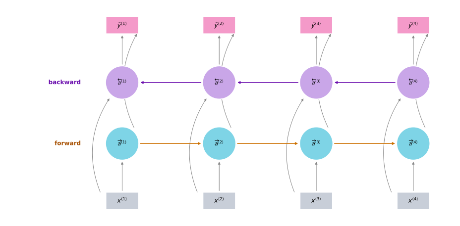
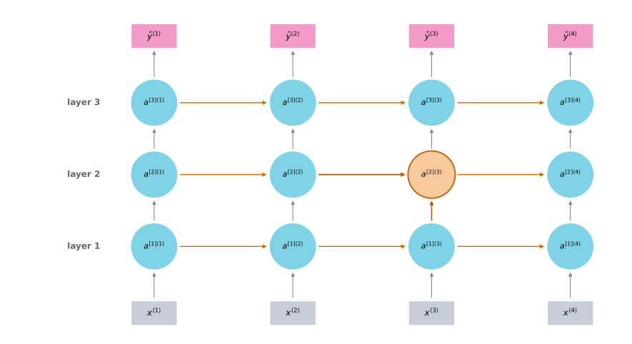
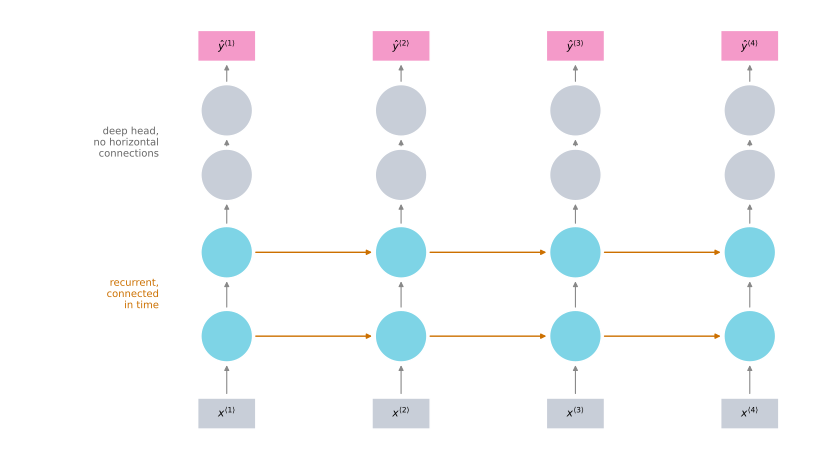

Bidirectional and Deep RNNs
deep-learning
sequence-models
rnn
brnn
deep-rnn
architecture
Two extensions that finish the toolbox, one that lets a prediction see the future of the sequence and one that stacks recurrent layers into a deeper model.
By now you have seen most of the key building blocks of an RNN. Two more ideas let you build much more powerful models. One is the bidirectional RNN, which lets a prediction at a point in time take information from both earlier and later in the sequence. The other is the deep RNN.
Bidirectional RNNs
To motivate the bidirectional RNN, look again at the network used for named entity recognition. One of its problems is that to figure out whether the third word Teddy is part of a person’s name, it is not enough to look only at the first part of the sentence. To tell whether \(\hat{y}^{\langle 3 \rangle}\) should be 0 or 1 you need more information than the first few words, because those first three words do not tell you whether the sentence is about Teddy bears or about the former US President Teddy Roosevelt.
This is a unidirectional, forward-only RNN, and the problem holds whether the cells are standard RNN blocks, GRU units, or LSTM blocks. All of them run in a forward direction only. A bidirectional RNN, or BRNN, fixes this.
On a small screen, scroll horizontally to inspect all four time steps.
Take a simplified four-word sentence with inputs \(x^{\langle 1 \rangle}\) through \(x^{\langle 4 \rangle}\). The hidden layer has a forward recurrent component, written \(\overrightarrow{a}^{\langle 1 \rangle}\) through \(\overrightarrow{a}^{\langle 4 \rangle}\), with the right arrow denoting the forward direction. So far this is just the network from before, with the arrows drawn in slightly unusual positions.
The arrows are drawn that way to make room for a backward recurrent component, \(\overleftarrow{a}^{\langle 1 \rangle}\) through \(\overleftarrow{a}^{\langle 4 \rangle}\), where the left arrow denotes a backward connection. Those backward units connect to each other going backwards in time. Notice that this network defines an acyclic graph, so there is a well-defined order in which everything can be computed.
Given an input sequence \(x^{\langle 1 \rangle}\) to \(x^{\langle 4 \rangle}\), forward propagation first computes \(\overrightarrow{a}^{\langle 1 \rangle}\), then uses that to compute \(\overrightarrow{a}^{\langle 2 \rangle}\), then \(\overrightarrow{a}^{\langle 3 \rangle}\), then \(\overrightarrow{a}^{\langle 4 \rangle}\). The backward sequence starts at the other end, computing \(\overleftarrow{a}^{\langle 4 \rangle}\) first, then going back to \(\overleftarrow{a}^{\langle 3 \rangle}\), then \(\overleftarrow{a}^{\langle 2 \rangle}\), then \(\overleftarrow{a}^{\langle 1 \rangle}\).
This is worth being careful about. All of this is forward propagation, not backpropagation. It just happens that part of the forward computation goes from left to right and part of it goes from right to left.
Once all the hidden activations are computed, you can make the predictions. The prediction at time \(t\) is an activation function applied to a weight matrix with both the forward activation and the backward activation at that time fed in.
\[\hat{y}^{\langle t \rangle} = g\!\left(W_y\,[\,\overrightarrow{a}^{\langle t \rangle},\, \overleftarrow{a}^{\langle t \rangle}\,] + b_y\right)\]
Look at the prediction at time step 3. Information from \(x^{\langle 1 \rangle}\) flows into \(\overrightarrow{a}^{\langle 1 \rangle}\), then into \(\overrightarrow{a}^{\langle 2 \rangle}\), which also takes in \(x^{\langle 2 \rangle}\), then into \(\overrightarrow{a}^{\langle 3 \rangle}\), and so into \(\hat{y}^{\langle 3 \rangle}\). Meanwhile information from \(x^{\langle 4 \rangle}\) flows through \(\overleftarrow{a}^{\langle 4 \rangle}\) into \(\overleftarrow{a}^{\langle 3 \rangle}\) and into the same prediction. So the prediction at time 3 takes as input information from the past, from the present, and from the future. Given a phrase like “He said, Teddy Roosevelt …”, deciding whether Teddy is part of a person’s name needs exactly that.
These blocks do not have to be standard RNN blocks. They can be GRU blocks or LSTM blocks, and for a lot of natural language processing problems a bidirectional RNN with LSTM blocks appears to be commonly used. If you have an NLP problem with a complete sentence and you are trying to label things in it, a bidirectional RNN with LSTM blocks running forward and backward is a pretty reasonable first thing to try.
Cost of Seeing the Future
The disadvantage of the bidirectional RNN is that you need the entire sequence of data before you can make predictions anywhere. If you are building a speech recognition system, a BRNN will let you take the entire utterance into account, but with a straightforward implementation you need to wait for the person to stop talking to get the whole utterance before you can process it and make a prediction. Real-time speech recognition applications therefore use somewhat more complex models rather than the standard bidirectional RNN. For a lot of natural language processing applications, where you can get the entire sentence all at once, the standard BRNN is very effective.
Review Questions
1. Why can a unidirectional RNN not decide whether Teddy is part of a person’s name at time step 3?
Answer
At step 3 it has only seen “He said Teddy”. Those three words are consistent both with Teddy bears and with Teddy Roosevelt, and the information that settles it comes later in the sentence. A forward-only network has no path from a later word back to an earlier prediction, and switching the cells to GRU or LSTM blocks does not change that, because the direction of flow is the problem, not the cell.
1. In which order are the activations computed in a BRNN, and why is that not backpropagation?
Answer
The forward components are computed left to right, \(\overrightarrow{a}^{\langle 1 \rangle}\) through \(\overrightarrow{a}^{\langle 4 \rangle}\), and the backward components are computed right to left, starting at \(\overleftarrow{a}^{\langle 4 \rangle}\) and ending at \(\overleftarrow{a}^{\langle 1 \rangle}\). All of it is forward propagation, computing activations from inputs. It just happens that half of the computation runs against the direction of the sequence. Backpropagation is a separate later pass that computes gradients.
1. What is the practical cost of using a BRNN, and where does it bite hardest?
Answer
A standard BRNN needs the full sequence before it can finalize its predictions, because the right-to-left recurrence begins at the last time step. This causes latency in live settings such as speech recognition. When the full sequence is already available, the latency constraint is less important, although the second recurrent direction still requires additional computation, parameters, and memory.
1. Your mood depends on the current and past few days’ weather. You have 365 days of weather, \(x^{\langle 1 \rangle}, \ldots, x^{\langle 365 \rangle}\), and of mood, \(y^{\langle 1 \rangle}, \ldots, y^{\langle 365 \rangle}\), and you want a model mapping \(x\) to \(y\). Should you use a unidirectional or a bidirectional RNN?
Unidirectional, because \(y^{\langle t \rangle}\) depends only on \(x^{\langle 1 \rangle}, \ldots, x^{\langle t \rangle}\), not on all 365 days
Unidirectional, because \(y^{\langle t \rangle}\) depends only on \(x^{\langle t \rangle}\), and not on other days’ weather
Bidirectional, because it lets the prediction of mood on day \(t\) take more information into account
Bidirectional, because it lets backpropagation compute more accurate gradients
Answer
a. Mood on day \(t\) is set by that day and the days before it, so the past is the only thing the model needs and a forward-only recurrence already carries it. Option b is too strong, since the past few days matter and not just today. Option c would let the prediction for day \(t\) read weather from days that have not happened yet, which is not what mood depends on here and would not be available when predicting today’s mood in practice. Option d misstates what a second direction does, since it changes which information reaches a prediction rather than making gradients more accurate.
Deep RNNs
The versions of RNNs seen so far already work quite well by themselves, but for learning very complex functions it is sometimes useful to stack multiple layers of RNNs together to build deeper versions of these models.
For a standard neural network you have an input \(x\) stacked into a hidden layer with activations \(a^{[1]}\), then another layer with \(a^{[2]}\), then maybe \(a^{[3]}\), and then a prediction \(\hat{y}\). A deep RNN is like that network unrolled in time.
The notation now carries two indices. In \(a^{[l]\langle t \rangle}\), square brackets identify recurrent layer \(l\), while angle brackets identify time step \(t\). For example, \(a^{[1]\langle 0 \rangle}\) is the initial activation of the first recurrent layer, and \(a^{[2]\langle 3 \rangle}\) is the activation of layer 2 at time step 3.
On a small screen, scroll horizontally to inspect all four time steps.

Look at how one of these values is computed. The unit \(a^{[2]\langle 3 \rangle}\) has two inputs, one coming from the bottom and one coming from the left. It applies an activation function \(g\) to a weight matrix, called \(W_a\) because it is computing an activation quantity, for the second layer.
\[a^{[2]\langle 3 \rangle} = g\!\left(W_a^{[2]}\,[\,a^{[2]\langle 2 \rangle},\, a^{[1]\langle 3 \rangle}\,] + b_a^{[2]}\right)\]
The same parameters \(W_a^{[2]}\) and \(b_a^{[2]}\) are used for every one of the computations in that layer, while the first layer has its own \(W_a^{[1]}\) and \(b_a^{[1]}\).
For standard networks you have seen models that are very deep, maybe over a hundred layers. For RNNs, having three layers is already quite a lot, because of the temporal dimension. These networks get quite big even with just a small handful of layers, so you do not usually see them stacked a hundred deep.
Recurrent Layers with a Deep Head
One thing you do sometimes see is recurrent layers stacked on top of each other, and then, instead of continuing to connect horizontally, the output goes into a bunch of deep layers that are not connected across time, and that stack finally predicts \(\hat{y}^{\langle t \rangle}\). The same deep stack sits above every time step.
On a small screen, scroll horizontally to inspect all four time steps.

This is a type of architecture that shows up more and more, with a few recurrent units connected in time followed by a deep network that has no horizontal connections.
Quite often these blocks are not the simple RNN model either. They can be GRU blocks or LSTM blocks, and you can also build deep versions of the bidirectional RNN. Because deep RNNs are quite computationally expensive to train, and there is often a large temporal extent already, you do not see as many deep recurrent layers as you would see layers in a deep convolutional network.
Review Questions
1. What are the two inputs to \(a^{[2]\langle 3 \rangle}\), and what equation combines them?
Answer
One input comes from the left, \(a^{[2]\langle 2 \rangle}\), the same layer at the previous time step. The other comes from below, \(a^{[1]\langle 3 \rangle}\), the layer beneath it at the same time step. They combine as \[a^{[2]\langle 3 \rangle} = g\!\left(W_a^{[2]}\,[\,a^{[2]\langle 2 \rangle},\, a^{[1]\langle 3 \rangle}\,] + b_a^{[2]}\right)\]
1. Which parameters are shared, and along which direction?
Answer
\(W_a^{[2]}\) and \(b_a^{[2]}\) are shared across every time step within layer 2, so sharing runs horizontally, along time. They are not shared with layer 1, which has its own \(W_a^{[1]}\) and \(b_a^{[1]}\). So each layer has one set of parameters, reused at every time step of that layer.
1. Why is three layers already a lot for an RNN when convolutional networks run past a hundred?
Answer
Because of the temporal dimension. Every layer is already repeated once per time step, so a three-layer RNN over a long sequence is an enormous computation graph before you stack anything else on top. Deep RNNs are expensive to train for that reason, which is why the horizontal connections are often dropped above a few recurrent layers in favor of a plain deep head.
1. In the architecture with a deep head, what distinguishes the upper layers from the lower ones?
The upper layers use LSTM blocks
The upper layers have no horizontal connections across time
The upper layers are shared across time steps but the lower ones are not
The upper layers run backwards in time
Answer
b. The lower layers are recurrent and connected in time, while the deep head above them is an ordinary feedforward stack applied at each time step independently. The same stack sits above every step, but no activation passes sideways within it.
With the basic RNN, the GRU, the LSTM, the bidirectional RNN, and the deep versions of these, you now have a rich toolbox for constructing powerful sequence models.